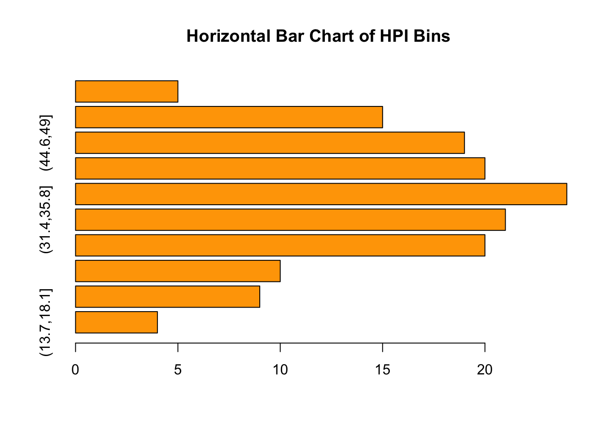
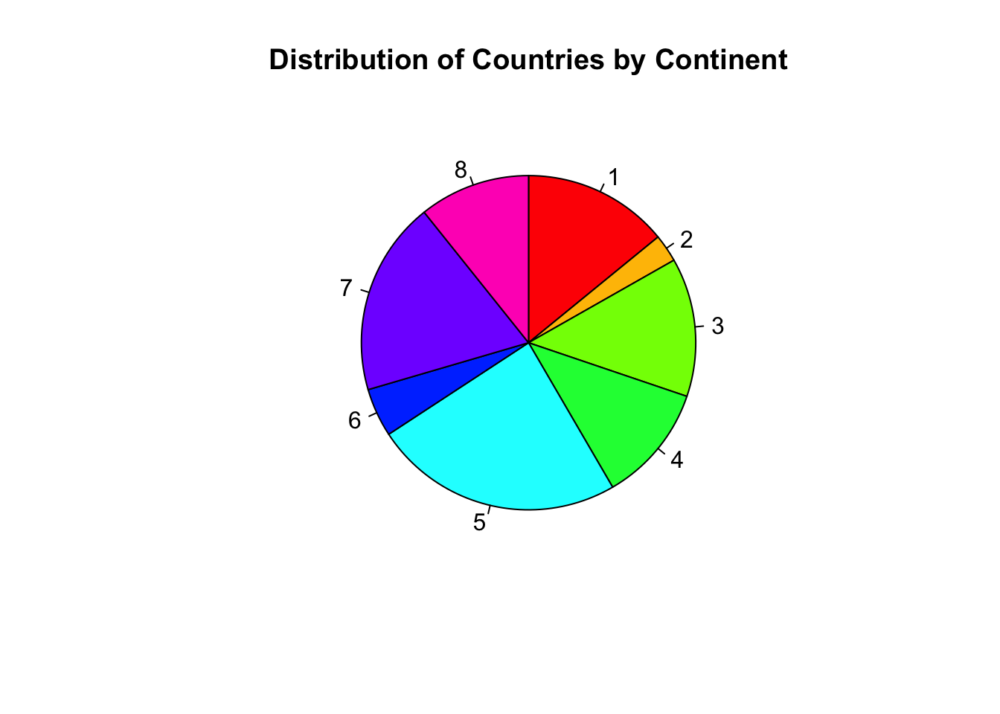
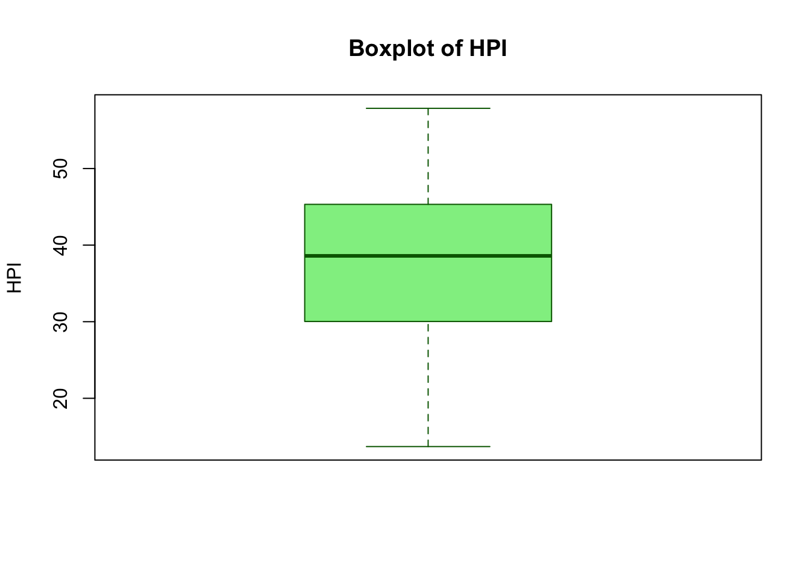
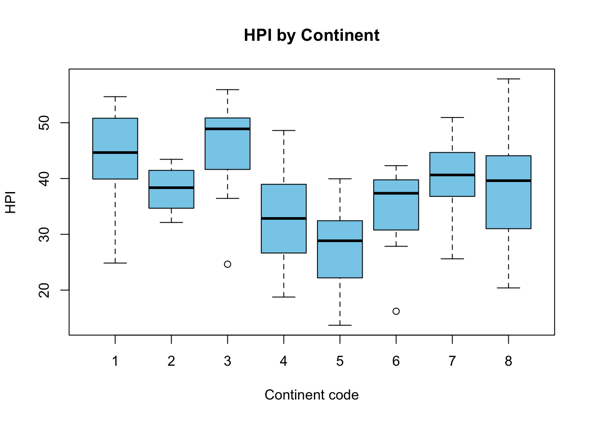
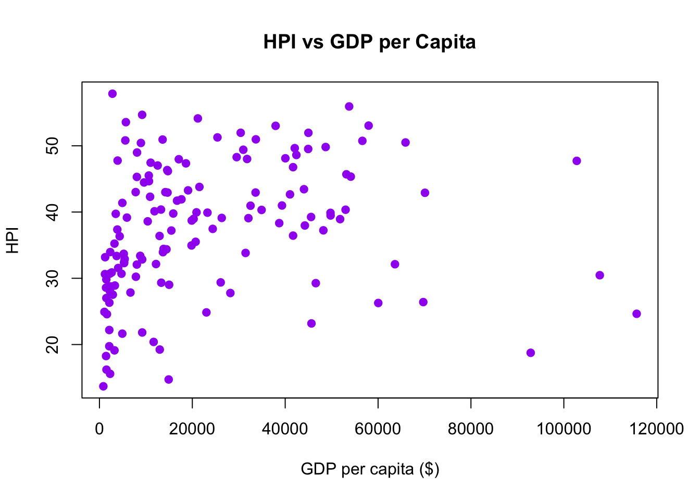

barplot(table(hpi_bins),horiz =TRUE,main ="Horizontal Bar Chart of HPI Bins",col ="orange")

2(c) Pie Chart — Base R
Code
continent_counts <-table(hpi$Continent)pie(continent_counts,main ="Distribution of Countries by Continent",col =rainbow(length(continent_counts)),clockwise =TRUE)

2d. Boxplot
Code
# Load your datahpi <-read_excel("HPI.xlsx")# Create a clean version without NA in HPIhpi_clean <-subset(hpi, !is.na(HPI))# Make sure hpi_clean existshpi_clean <-subset(hpi, !is.na(HPI))boxplot(hpi_clean$HPI,main ="Boxplot of HPI",ylab ="HPI",col ="lightgreen",border ="darkgreen")

Code
boxplot(HPI ~ Continent, data = hpi_clean,main ="HPI by Continent",xlab ="Continent code",ylab ="HPI",col ="skyblue")

2e. Scatter Plot
Code
plot(hpi_clean$`GDP per capita ($)`, hpi_clean$HPI,main ="HPI vs GDP per Capita",xlab ="GDP per capita ($)",ylab ="HPI",pch =19,col ="purple")

GGLOT2 VERSIONS OF ALL CHART TYPES
Export Chat in Multiple format
Code
## 4(a) Export to PDF pdf("HPI_scatter.pdf", width =7, height =5)print(p_scatter)dev.off()